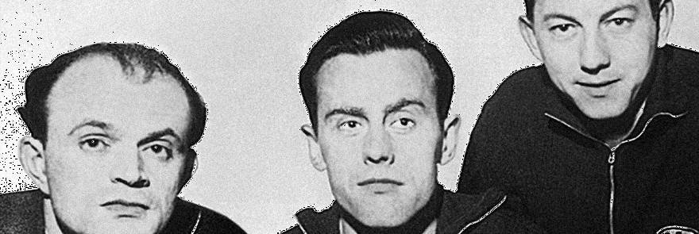
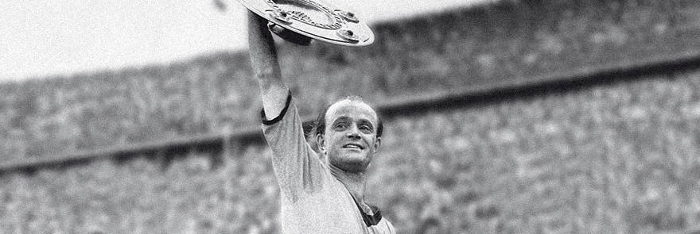

24/6/1956
Contract extended ahead of 1956 championship title

Dr Werner Wilms and the board today received an unexpected visit
from a delegation of players ahead of the championship game
against Karlsruher SC. The reason? The board had cunningly chosen
precisely this moment to advise Erich Schanko in writing that they
were not inclined to extend his contract at the club. Preissler
and the players were not happy about this and quite simply set the
board the following ultimatum:
”If Erich’s contract is
not extended, then we will not be taking the field today!“ Not
unexpectedly, Erich duly got his contract extension.
25/6/1956
Board outfoxed after 1956 title

Following their win in the final of the 1956 championship Borussia
travelled back to Dortmund by train drunk with joy but still wide
awake. The players‘ wives were on board too, of course. But the
then board did not find that fact so obvious, because the decision
was taken for the players to be presented to their fans without
their loved ones. The players rallied around Max Michallek and
stood their ground. In turn the board sought to get their own way
by engineering it so that the players were all at the front of the
carriage, the wives further back. The intention was that the
carriage containing the wives would be secretly unhooked off the
back of the train before it arrived in Dortmund. The players again
saw through this manoeuvre and quickly spread themselves amongst
the ladies to thwart the very strange plan.
21/11/1956
A one-two in the 50s – the first European games
Bobby Charlton, one of the most important figures in World
football in this century, was simply the highlight of the 16th
fan-gathering on the ”Alten Markt“. Ahead of the Champions League
game between BVB and Man Utd (1-0 to United) he called for the
fans of both teams to ensure that the night would be a celebration
of European football. His first visit to Dortmund, albeit as a
substitute, was back in November 1956. It was the return leg of
the European Cup tie between the same two clubs and took place at
the „Rote Erde“ stadium. BVB keeper Kwiatowski has entered the
annals of football history as the ’Hero of Manchester‘ for his
performance denying the likes of Taylor and co. The return leg in
Dortmund ended goalless. Bobby Charlton was one of the few to
survive the Munich air crash on 6 February 1958. 21 people lost
their lives that day on the runway at Munich airport.
BVB won their first German championship in 1956 with a
4-2 win over Karlsruher SC. Coach Helmut Schneider (who had
replaced the legendary ”Bumbas“ Schmidt a year earlier saw his
selection (Kwiatowski, Burgsmueller, Sandmann, Schlebrowski,
Michallek, Bracht, Peters, Preissler, Kelbassa, Niepieklo and
Kapitulski) justify his ideas and bring home the championship bowl
to the heartland of football. The title secured entry into the
next season’s European Cup for the first time. The following year,
and with the same line-up, BVB repeated their championship win
this time seeing off a Hamburg SV team including a young Uwe
Seeler and Klaus Stuermer with a resounding 4-1 win.